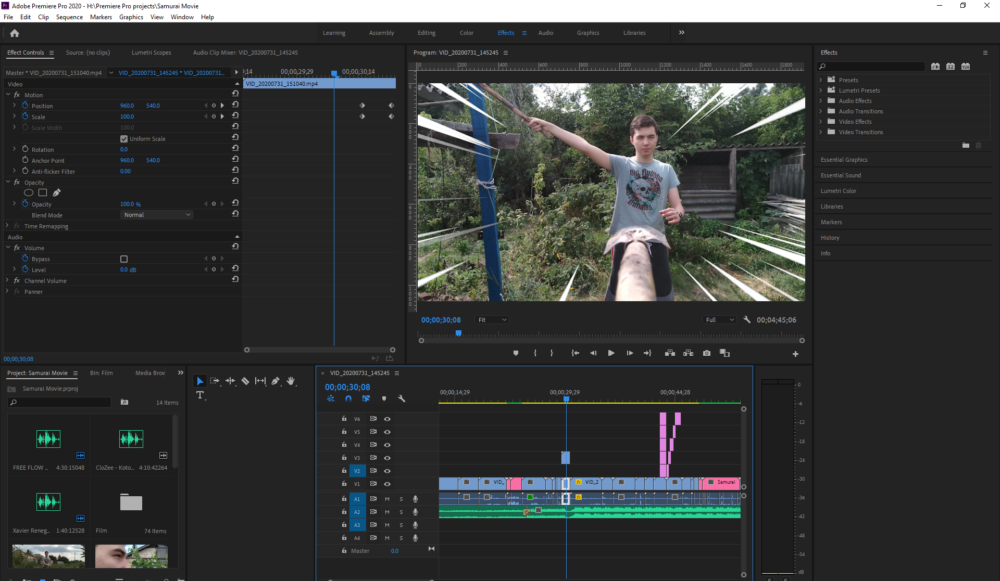
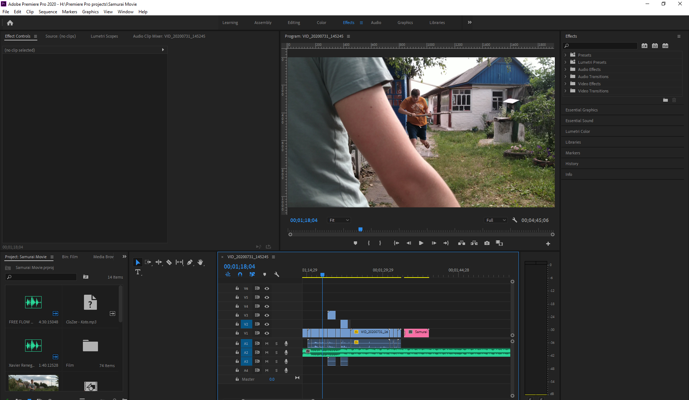

Adobe Premiere Pro is a timeline-based video editing software application developed by Adobe Systems as published as part of the Adobe Creative Cloud licensing program. First launched in 2003, Adobe Premiere Pro is a successor of Adobe Premiere. It is geared towards professional video editing , while its sibling, Adobe Premiere Elements, targets the consumer market.
